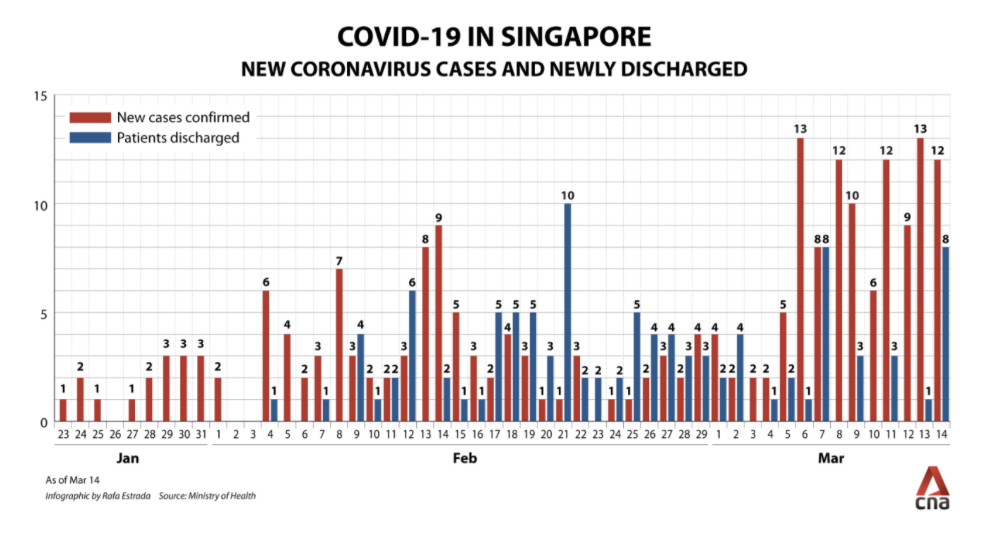

We've organised the page into sections, with each section containing a chart, title and a description. Here, we can describe the chart and give some context. As a first example, we're using a basic chart from our repo.
Chart 1: The first visualisation is a bar chart illustrating Primark's annual revenue growth from 2007-2023.
Chart 2: The chart illustrates global fast fashion spending patterns for 2007 to 2023, comparing countries based on average items purchased and cost per item, providing insights into consumption behaviors and economic factors.
The two separate graphs, created from the Economics Observatory API, display U.S. GDP growth and nuclear power output trends from 2000 to 2023. One graph highlights the trajectory of economic growth, while the other focuses on the evolution of nuclear energy production, providing independent insights into both areas over time.
Visualisation 1:
Visualisation 2:
I came across an intriguing argument that diversifying teachers could foster discussions on the British Empire's colonial legacy and opressions. My visualisations below show a trend of predominantly White British teachers, highlighting the need for greater diversity in the teaching workforce.
Visualisation 1:
Visualisation 2:
The chart image we are working with: 
Replicated chart:
Improved chart:
I chose to scrape Wikipedia because it provides, Wikipedia’s tables are static HTML, so BeautifulSoup and pandas.read_html() can directly access the data, making it an excellent resource. Click here to view
Visualisation: